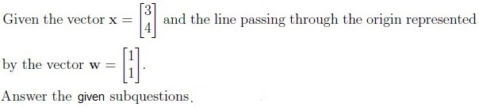
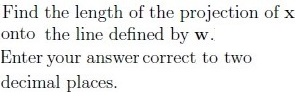
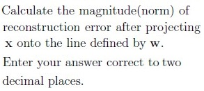
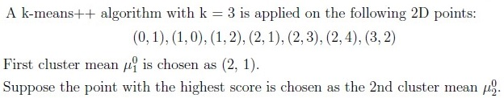
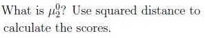

Consider a dataset with 100 total data points. Each data point is classified as either type A or type B. We model this using a Bernoulli distribution, where p is the probability of a data point being type A. If the maximum likelihood estimate (MLE) of p based on the dataset is 0.4, how many data points of type B are there in this dataset?
Comprehension passage - the questions below it refer to this

Q10SA3 marks

Q11SA4 marks

Comprehension passage - the questions below it refer to this
Based on the above data, answer the given subquestions.

Q12MCQ3 marks

(0,1)
(2,3)
(3,2)
(2,4)
Q13MCQ4 marks
Which point has the lowest probability of being chosen as the 3rd cluster mean? Use squared distance to calculate the scores.